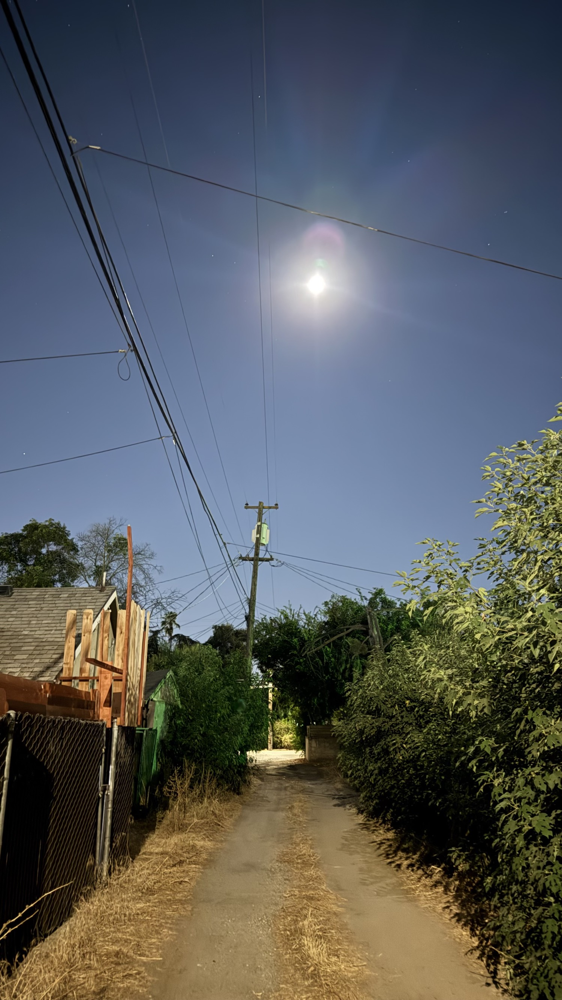
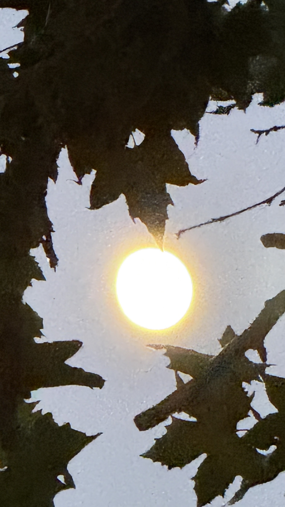
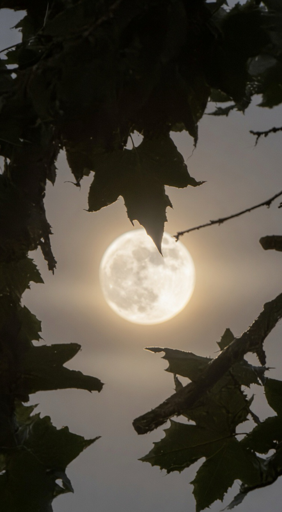
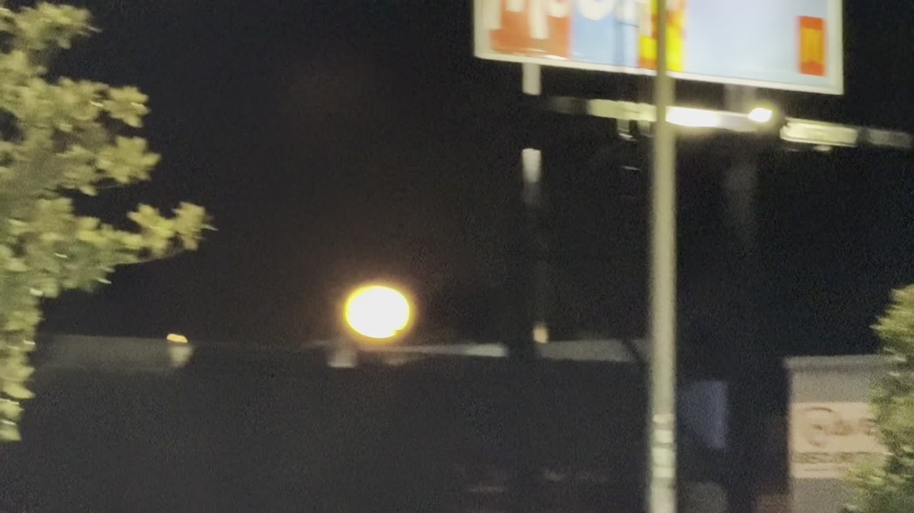

The day after a full moon is one of the most useful nights of the month if you live in the Central Valley. The moon is still nearly full, high and bright, and the air finally starts to cool after the brutal 100°+ afternoon. Knowing roughly when it rises and where it sits in the sky gives you extra flexibility for outdoor work, photography, or simply being outside when the heat backs off.
How the Cycle Actually Moves
When the Moon is opposite the Sun (180° apart), we get a full moon. It rises near sunset and stays up most of the night. After that:
- • Each night the Moon rises roughly 50 minutes later.
- • On the nights right after full, moonrise is still in the evening but progressively later, so the bright moon is higher later into the night.
- • By the time you reach last quarter, the Moon is rising around midnight and is mostly a morning object.
The common intuition that the moon “comes up earlier” after full is the opposite of what happens. It rises later. That later rise is exactly why the nights after full stay usable for longer under bright moonlight.
Central Valley Heat Strategy
On days that climb well above 100°, many of us duck inside around 1 PM and stay there until the temperature starts dropping after 9:30 PM. That leaves a short window for outdoor tasks.
A near-full moon changes the equation. The bright night lets you shift sleep earlier or later and still have usable light for yard work, walking the neighborhood, checking on things, or simple photography without needing streetlights or a flashlight the whole time.
The full-moon window is roughly three or four nights centered on the exact full phase. Use it.
Once-a-Month Photography Windows
Halfway through a full-moon night the Moon is near overhead. That is the cleanest, brightest natural light you get all month for outdoor night shots. The alley shot below was taken under those conditions.

Any phone shot of the Moon itself can be improved with a simple AI pass that keeps the real phase and lighting while recovering detail. Here is the same Moon, first blown out, then cleaned:


Prompt tip: tell the model the exact phase (“waning gibbous, 95% illuminated”) and ask it to recover surface detail while keeping the original lighting and framing. It works surprisingly consistently.
Local Night Context

Quick Phase Reference
Horizon rule of thumb: if you see the Moon low on the horizon in full daylight, it is usually waxing. If you see it low on the horizon well after dark, it is usually waning.
Next full moon: August 27–28, 2026
Mark the three nights around it. Plan one outdoor task that benefits from bright natural light after the heat breaks.
High Tower District · Fresno
Sources & Data
- • Moon phase and rise/set times: timeanddate.com / USNO data for Fresno, CA
- • July 29, 2026 Full Buck Moon timing confirmed across multiple astronomical sources
- • Local observations and photography: Tower District, Fresno, July 30–31 2026
- • AI clarification of moon detail performed with phase-aware prompting